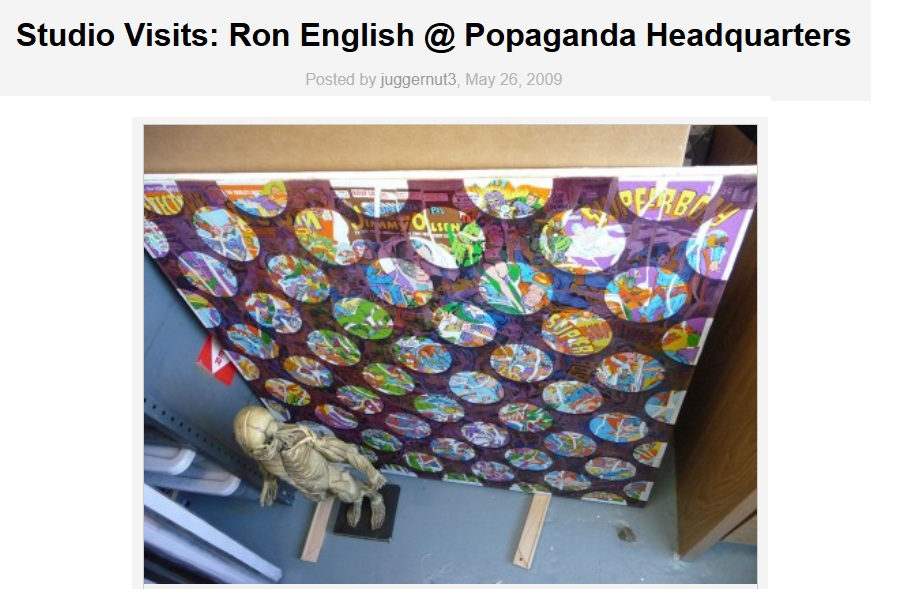

Exhibitions
Lazarus Rising, Elms Lesters Painting Rooms, London, United Kingdom, May 8–June 6, 2009.
Literature
Ron English, Lazarus Rising (London: Elms Lesters Painting Rooms, 2009), p. 27.

Ron English, Death and the Eternal Forever (London: Korero Press, 2014), p. 88. ISBN 978-0957664920.

Ron English, Status Factory: The Art of Ron English (San Francisco: Last Gasp of San Francisco, 2014), p. 22. ISBN 978-0867197891.

Notes
The work’s inclusion in Lazarus Rising is documented in the exhibition catalogue.
The work’s inclusion in Lazarus Rising is documented in the exhibition catalogue.
Ancillary Documentation


